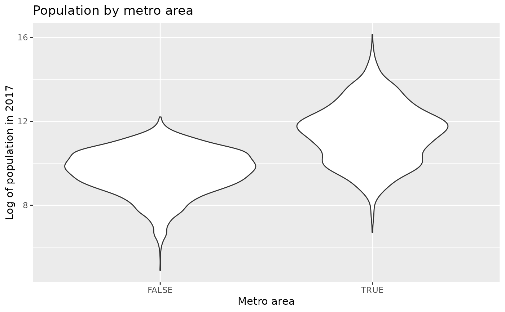
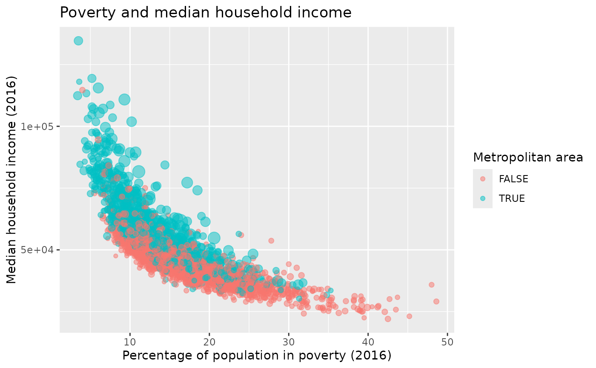

Data for 3142 counties in the United States.
Format
A data frame with 3142 observations on the following 188 variables.
- state
State.
- name
County name.
- fips
FIPS code.
- pop2000
2000 population.
- pop2010
2010 population.
- pop2011
2011 population.
names
- pop2012
2012 population.
- pop2013
2013 population.
- pop2014
2014 population.
- pop2015
2015 population.
- pop2016
2016 population.
- pop2017
2017 population.
- age_under_5_2010
Percent of population under 5 (2010).
- age_under_5_2017
Percent of population under 5 (2017).
- age_under_18_2010
Percent of population under 18 (2010).
- age_over_65_2010
Percent of population over 65 (2010).
- age_over_65_2017
Percent of population over 65 (2017).
- median_age_2017
Median age (2017).
- female_2010
Percent of population that is female (2010).
- white_2010
Percent of population that is white (2010).
- black_2010
Percent of population that is black (2010).
- black_2017
Percent of population that is black (2017).
- native_2010
Percent of population that is a Native American (2010).
- native_2017
Percent of population that is a Native American (2017).
- asian_2010
Percent of population that is a Asian (2010).
- asian_2017
Percent of population that is a Asian (2017).
- pac_isl_2010
Percent of population that is Hawaii or Pacific Islander (2010).
- pac_isl_2017
Percent of population that is Hawaii or Pacific Islander (2017).
- other_single_race_2017
Percent of population that identifies as another single race (2017).
- two_plus_races_2010
Percent of population that identifies as two or more races (2010).
- two_plus_races_2017
Percent of population that identifies as two or more races (2017).
- hispanic_2010
Percent of population that is Hispanic (2010).
- hispanic_2017
Percent of population that is Hispanic (2017).
- white_not_hispanic_2010
Percent of population that is white and not Hispanic (2010).
- white_not_hispanic_2017
Percent of population that is white and not Hispanic (2017).
- speak_english_only_2017
Percent of population that speaks English only (2017).
- no_move_in_one_plus_year_2010
Percent of population that has not moved in at least one year (2006-2010).
- foreign_born_2010
Percent of population that is foreign-born (2006-2010).
- foreign_spoken_at_home_2010
Percent of population that speaks a foreign language at home (2006-2010).
- women_16_to_50_birth_rate_2017
Birth rate for women ages 16 to 50 (2017).
- hs_grad_2010
Percent of population that is a high school graduate (2006-2010).
- hs_grad_2016
Percent of population that is a high school graduate (2012-2016).
- hs_grad_2017
Percent of population that is a high school graduate (2017).
- some_college_2016
Percent of population with some college education (2012-2016).
- some_college_2017
Percent of population with some college education (2017).
- bachelors_2010
Percent of population that earned a bachelor's degree (2006-2010).
- bachelors_2016
Percent of population that earned a bachelor's degree (2012-2016).
- bachelors_2017
Percent of population that earned a bachelor's degree (2017).
- veterans_2010
Percent of population that are veterans (2006-2010).
- veterans_2017
Percent of population that are veterans (2017).
- mean_work_travel_2010
Mean travel time to work (2006-2010).
- mean_work_travel_2017
Mean travel time to work (2017).
- broadband_2017
Percent of population who has access to broadband (2017).
- computer_2017
Percent of population who has access to a computer (2017).
- housing_units_2010
Number of housing units (2010).
- homeownership_2010
Home ownership rate (2006-2010).
- housing_multi_unit_2010
Housing units in multi-unit structures (2006-2010).
- median_val_owner_occupied_2010
Median value of owner-occupied housing units (2006-2010).
- households_2010
Households (2006-2010).
- households_2017
Households (2017).
- persons_per_household_2010
Persons per household (2006-2010).
- persons_per_household_2017
Persons per household (2017).
- per_capita_income_2010
Per capita money income in past 12 months (2010 dollars, 2006-2010)
- per_capita_income_2017
Per capita money income in past 12 months (2017 dollars, 2017)
- metro_2013
Whether the county contained a metropolitan area in 2013.
- median_household_income_2010
Median household income (2006-2010).
- median_household_income_2016
Median household income (2012-2016).
- median_household_income_2017
Median household income (2017).
- private_nonfarm_establishments_2009
Private nonfarm establishments (2009).
- private_nonfarm_employment_2009
Private nonfarm employment (2009).
- percent_change_private_nonfarm_employment_2009
Private nonfarm employment, percent change from 2000 to 2009.
- nonemployment_establishments_2009
Nonemployer establishments (2009).
- firms_2007
Total number of firms (2007).
- black_owned_firms_2007
Black-owned firms, percent (2007).
- native_owned_firms_2007
Native American-owned firms, percent (2007).
- asian_owned_firms_2007
Asian-owned firms, percent (2007).
- pac_isl_owned_firms_2007
Native Hawaiian and other Pacific Islander-owned firms, percent (2007).
- hispanic_owned_firms_2007
Hispanic-owned firms, percent (2007).
- women_owned_firms_2007
Women-owned firms, percent (2007).
- manufacturer_shipments_2007
Manufacturer shipments, 2007 ($1000).
- mercent_whole_sales_2007
Mercent wholesaler sales, 2007 ($1000).
- sales_2007
Retail sales, 2007 ($1000).
- sales_per_capita_2007
Retail sales per capita, 2007.
- accommodation_food_service_2007
Accommodation and food services sales, 2007 ($1000).
- building_permits_2010
Building permits (2010).
- fed_spending_2009
Federal spending, in thousands of dollars (2009).
- area_2010
Land area in square miles (2010).
- density_2010
Persons per square mile (2010).
- smoking_ban_2010
Describes whether the type of county-level smoking ban in place in 2010, taking one of the values
"none","partial", or"comprehensive".- poverty_2010
Percent of population below poverty level (2006-2010).
- poverty_2016
Percent of population below poverty level (2012-2016).
- poverty_2017
Percent of population below poverty level (2017).
- poverty_age_under_5_2017
Percent of population under age 5 below poverty level (2017).
- poverty_age_under_18_2017
Percent of population under age 18 below poverty level (2017).
- civilian_labor_force_2007
Civilian labor force in 2007.
- employed_2007
Number of civilians employed in 2007.
- unemployed_2007
Number of civilians unemployed in 2007.
- unemployment_rate_2007
Unemployment rate in 2007.
- civilian_labor_force_2008
Civilian labor force in 2008.
- employed_2008
Number of civilians employed in 2008.
- unemployed_2008
Number of civilians unemployed in 2008.
- unemployment_rate_2008
Unemployment rate in 2008.
- civilian_labor_force_2009
Civilian labor force in 2009.
- employed_2009
Number of civilians employed in 2009.
- unemployed_2009
Number of civilians unemployed in 2009.
- unemployment_rate_2009
Unemployment rate in 2009.
- civilian_labor_force_2010
Civilian labor force in 2010.
- employed_2010
Number of civilians employed in 2010.
- unemployed_2010
Number of civilians unemployed in 2010.
- unemployment_rate_2010
Unemployment rate in 2010.
- civilian_labor_force_2011
Civilian labor force in 2011.
- employed_2011
Number of civilians employed in 2011.
- unemployed_2011
Number of civilians unemployed in 2011.
- unemployment_rate_2011
Unemployment rate in 2011.
- civilian_labor_force_2012
Civilian labor force in 2012.
- employed_2012
Number of civilians employed in 2012.
- unemployed_2012
Number of civilians unemployed in 2012.
- unemployment_rate_2012
Unemployment rate in 2012.
- civilian_labor_force_2013
Civilian labor force in 2013.
- employed_2013
Number of civilians employed in 2013.
- unemployed_2013
Number of civilians unemployed in 2013.
- unemployment_rate_2013
Unemployment rate in 2013.
- civilian_labor_force_2014
Civilian labor force in 2014.
- employed_2014
Number of civilians employed in 2014.
- unemployed_2014
Number of civilians unemployed in 2014.
- unemployment_rate_2014
Unemployment rate in 2014.
- civilian_labor_force_2015
Civilian labor force in 2015.
- employed_2015
Number of civilians employed in 2015.
- unemployed_2015
Number of civilians unemployed in 2015.
- unemployment_rate_2015
Unemployment rate in 2015.
- civilian_labor_force_2016
Civilian labor force in 2016.
- employed_2016
Number of civilians employed in 2016.
- unemployed_2016
Number of civilians unemployed in 2016.
- unemployment_rate_2016
Unemployment rate in 2016.
- uninsured_2017
Percent of population who are uninsured (2017).
- uninsured_age_under_6_2017
Percent of population under 6 who are uninsured (2017).
- uninsured_age_under_19_2017
Percent of population under 19 who are uninsured (2017).
- uninsured_age_over_74_2017
Percent of population under 74 who are uninsured (2017).
- civilian_labor_force_2017
Civilian labor force in 2017.
- employed_2017
Number of civilians employed in 2017.
- unemployed_2017
Number of civilians unemployed in 2017.
- unemployment_rate_2017
Unemployment rate in 2017.
- median_individual_income_2019
Median individual income (2019).
- pop_2019
2019 population.
- white_2019
Percent of population that is white alone (2015-2019).
- black_2019
Percent of population that is black alone (2015-2019).
- native_2019
Percent of population that is Native American alone (2015-2019).
- asian_2019
Percent of population that is Asian alone (2015-2019).
- pac_isl_2019
Percent of population that is Native Hawaiian or other Pacific Islander alone (2015-2019).
- other_single_race_2019
Percent of population that is some other race alone (2015-2019).
- two_plus_races_2019
Percent of population that is two or more races (2015-2019).
- hispanic_2019
Percent of population that identifies as Hispanic or Latino (2015-2019).
- white_not_hispanic_2019
Percent of population that is white alone, not Hispanic or Latino (2015-2019).
- median_age_2019
Median age (2015-2019).
- age_under_5_2019
Percent of population under 5 (2015-2019).
- age_over_85_2019
Percent of population 85 and over (2015-2019).
- age_over_18_2019
Percent of population 18 and over (2015-2019).
- age_over_65_2019
Percent of population 65 and over (2015-2019).
- mean_work_travel_2019
Mean travel time to work (2015-2019).
- persons_per_household_2019
Persons per household (2015-2019)
- avg_family_size_2019
Average family size (2015-2019).
- housing_one_unit_structures_2019
Percent of housing units in 1-unit structures (2015-2019).
- housing_two_unit_structures_2019
Percent of housing units in multi-unit structures (2015-2019).
- housing_mobile_homes_2019
Percent of housing units in mobile homes and other types of units (2015-2019).
- median_individual_income_age_25plus_2019
Median individual income (2019 dollars, 2015-2019).
- hs_grad_2019
Percent of population 25 and older that is a high school graduate (2015-2019).
- bachelors_2019
Percent of population 25 and older that earned a Bachelor's degree or higher (2015-2019).
- households_2019
Total households (2015-2019).
- households_speak_spanish_2019
Percent of households speaking Spanish (2015-2019).
- households_speak_other_indo_euro_lang_2019
Percent of households speaking other Indo-European language (2015-2019).
- households_speak_asian_or_pac_isl_2019
Percent of households speaking Asian and Pacific Island language (2015-2019).
- households_speak_other_2019
Percent of households speaking non European or Asian/Pacific Island language (2015-2019).
- households_speak_limited_english_2019
Percent of limited English-speaking households (2015-2019).
- poverty_2019
Percent of population below the poverty level (2015-2019).
- poverty_under_18_2019
Percent of population under 18 below the poverty level (2015-2019).
- poverty_65_and_over_2019
Percent of population 65 and over below the poverty level (2015-2019).
- mean_household_income_2019
Mean household income (2019 dollars, 2015-2019).
- per_capita_income_2019
Per capita money income in past 12 months (2019 dollars, 2015-2019).
- median_household_income_2019
Median household income (2015-2019).
- veterans_2019
Percent among civilian population 18 and over that are veterans (2015-2019).
- unemployment_rate_2019
Unemployment rate among those ages 20-64 (2015-2019).
- uninsured_2019
Percent of civilian noninstitutionalized population that is uninsured (2015-2019).
- uninsured_under_6_2019
Percent of population under 6 years that is uninsured (2015-2019).
- uninsured_under_19_2019
Percent of population under 19 that is uninsured (2015-2019).
- uninsured_65_and_older_2019
Percent of population 65 and older that is uninsured (2015-2019).
- household_has_computer_2019
Percent of households that have desktop or laptop computer (2015-2019).
- household_has_smartphone_2019
Percent of households that have smartphone (2015-2019).
- household_has_broadband_2019
Percent of households that have broadband internet subscription (2015-2019).
Source
The data prior to 2011 was from http://census.gov, though the exact page it came from is no longer available.
More recent data comes from the following sources.
Downloaded via the
tidycensusR package.Download links for spreadsheets were found on https://www.ers.usda.gov/data-products/county-level-data-sets/download-data
Unemployment - Bureau of Labor Statistics - LAUS data - https://www.bls.gov/lau/.
Median Household Income - Census Bureau - Small Area Income and Poverty Estimates (SAIPE) data.
The original data table was prepared by USDA, Economic Research Service.
Census Bureau.
2012-16 American Community Survey 5-yr average.
The original data table was prepared by USDA, Economic Research Service.
Tim Parker (tparker at ers.usda.gov) is the contact for much of the new data incorporated into this data set.
Examples
library(dplyr)
#>
#> Attaching package: ‘dplyr’
#> The following objects are masked from ‘package:stats’:
#>
#> filter, lag
#> The following objects are masked from ‘package:base’:
#>
#> intersect, setdiff, setequal, union
library(ggplot2)
county_complete |>
mutate(
pop_change = 100 * ((pop2017 / pop2013) - 1),
metro_area = if_else(metro_2013 == 1, TRUE, FALSE)
) |>
ggplot(aes(
x = poverty_2016,
y = pop_change,
color = metro_area,
size = sqrt(pop2017) / 1e3
)) +
geom_point(alpha = 0.5) +
scale_color_discrete(na.translate = FALSE) +
guides(size = FALSE) +
labs(
x = "Percentage of population in poverty (2016)",
y = "Percentage population change between 2013 to 2017",
color = "Metropolitan area",
title = "Population change and poverty"
)
#> Warning: Removed 6 rows containing missing values or values outside the scale range
#> (`geom_point()`).
# Counties with high population change
county_complete |>
mutate(pop_change = 100 * ((pop2017 / pop2013) - 1)) |>
filter(pop_change < -10 | pop_change > 25) |>
select(state, name, fips, pop_change)
#> state name fips pop_change
#> 1 Colorado Kit Carson County 8063 -13.06777
#> 2 Georgia Chattahoochee County 13053 -15.53977
#> 3 Illinois Alexander County 17003 -12.70390
#> 4 Kansas Morton County 20129 -12.15133
#> 5 North Dakota McKenzie County 38053 37.18598
#> 6 Tennessee Trousdale County 47169 29.25266
#> 7 Texas Concho County 48095 -33.63459
#> 8 Texas Hudspeth County 48229 32.09470
#> 9 Texas Loving County 48301 26.41509
#> 10 West Virginia McDowell County 54047 -11.72335
# Population by metro area
county_complete |>
mutate(metro_area = if_else(metro_2013 == 1, TRUE, FALSE)) |>
filter(!is.na(metro_area)) |>
ggplot(aes(x = metro_area, y = log(pop2017))) +
geom_violin() +
labs(
x = "Metro area",
y = "Log of population in 2017",
title = "Population by metro area"
)
#> Warning: Removed 3 rows containing non-finite outside the scale range
#> (`stat_ydensity()`).

# Poverty and median household income
county_complete |>
mutate(metro_area = if_else(metro_2013 == 1, TRUE, FALSE)) |>
ggplot(aes(
x = poverty_2016,
y = median_household_income_2016,
color = metro_area,
size = sqrt(pop2017) / 1e3
)) +
geom_point(alpha = 0.5) +
scale_color_discrete(na.translate = FALSE) +
guides(size = FALSE) +
labs(
x = "Percentage of population in poverty (2016)",
y = "Median household income (2016)",
color = "Metropolitan area",
title = "Poverty and median household income"
)
#> Warning: Removed 6 rows containing missing values or values outside the scale range
#> (`geom_point()`).

# Unemployment rate and poverty
county_complete |>
mutate(metro_area = if_else(metro_2013 == 1, TRUE, FALSE)) |>
ggplot(aes(
x = unemployment_rate_2017,
y = poverty_2016,
color = metro_area,
size = sqrt(pop2017) / 1e3
)) +
geom_point(alpha = 0.5) +
scale_color_discrete(na.translate = FALSE) +
guides(size = FALSE) +
labs(
x = "Unemployment rate (2017)",
y = "Percentage of population in poverty (2016)",
color = "Metropolitan area",
title = "Unemployment rate and poverty"
)
#> Warning: Removed 6 rows containing missing values or values outside the scale range
#> (`geom_point()`).